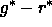
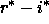
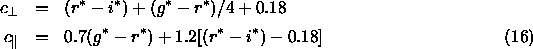
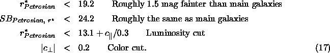
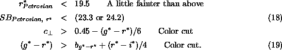
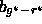

It has long been known that the most luminous galaxies in clusters are a very homogeneous population (e.g., Postman & Lauer 1995 and references therein); they have a very narrow range of color and intrinsic luminosity. Because these objects are intrinsically very luminous, they can be observed to great distance.
We therefore selected such objects by a variant of the method of
photometric redshifts (connolly95b), with the aim of selecting
a uniform, approximately volume-limited sample of objects with the
reddest colors in the rest frame eisenstein01. We term these
objects ``Luminous Red Galaxies'', or LRGs.
It turns out that this can be
simply done with cuts in the , ,  color-color-magnitude cube. Because the 4000Å break
moves from the g band to the r band at , two
different sets of selection criteria are used, which we term Cut I and
Cut II. First, we rotate to a
color basis that is aligned with the galaxy locus in the ,
plane as follows:
color-color-magnitude cube. Because the 4000Å break
moves from the g band to the r band at , two
different sets of selection criteria are used, which we term Cut I and
Cut II. First, we rotate to a
color basis that is aligned with the galaxy locus in the ,
plane as follows:

All colors are measured using model magnitudes, and all quantities are
corrected for Galactic reddening following schlegel98.
Cut I and Cut II objects used star-galaxy separation criteria that
changed from one chunk to another (Table 29).
For Cut I, the flux and color cuts are:

This gives an approximately volume-limited sample of galaxies to z = 0.37 with additional galaxies up to . These objects are flagged GALAXY_RED.
To reach higher redshifts, we use Cut II:

This selects red galaxies at 0.42 < z < 0.55. The surface brightness cut,
and the value of the color cut offset, , was different
in different versions of target selection, as indicated in
Table 29. Despite the deeper flux cut, this sample is
still flux-limited rather than luminosity-limited. These Cut II objects are
flagged both as GALAXY_RED_II and GALAXY_RED.
The luminosity cut in Cut I (eq. [17]) is a good approximation to a passively-evolving old stellar population from to , but is too permissive at lower redshift. At z<0.20, one should not use the GALAXY_RED flag to extract the low-redshift extension of the LRG volume-limited sample. Rather, one must use the redshift extracted from the main galaxy sample to construct the absolute magnitude and rest-frame color and select galaxies that fall in the region populated by the high-redshift LRGs. This is described in more detail in eisenstein01.
The resulting LRG sample has nearly constant comoving number density to with a passively-evolved luminosity threshold that is close to constant. This suggests that the sample is indeed close to the volume-limited goal. At z>0.4, the sample is effectively flux-limited but still selects intrinsically red galaxies. The sample selection is also quite efficient: 97% of the selected targets are at z>0.15.
The two LRG Cuts together give roughly 12 targets per square degree that are not already in the main galaxy target selection sample, typically 10 of which are Cut I targets and 2 of which are Cut II targets.